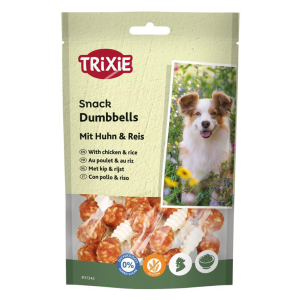
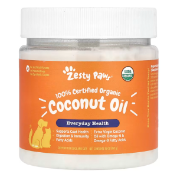
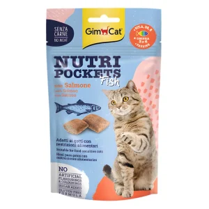
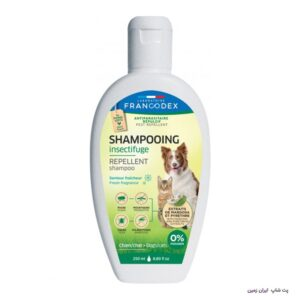
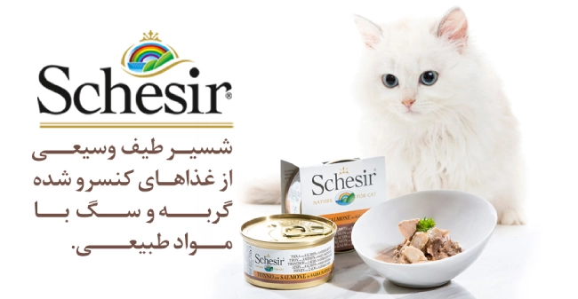

| غذای سگ | ویتامین | غذای گربه | شامپو |
|---|---|---|---|
|  |
 |
 |
 |
رطوبت کافی:
استفاده از غذای مرطوب یا ترکیب غذای خشک با کمی آب مرغ بدون نمک، به جلوگیری از کمآبی گربه کمک میکند.
کالری متعادل و سبک:
در تابستان نیاز گربه به کالری کمتر است. استفاده از پروتئینهای باکیفیت مثل مرغ، ماهی و بوقلمون توصیه میشود.
مواد معدنی و ویتامینهای کافی:
مصرف غذاهایی که شامل املاح معدنی و ویتامینهای ضروری هستند، به حفظ سلامت پوست و موی گربه کمک میکند.
هضم آسان:
غذاهای سبک و قابل هضم، از مشکلات گوارشی و احساس سنگینی در گربه جلوگیری میکنند.
گزینههای پیشنهادی غذا در تابستان غذای مرطوب گربه (Wet Food): مثل برندهایی مانند Schesir، Monge و Taste of the Wild که طعمهای ماهی یا مرغ ارائه میدهند و رطوبت کافی دارند. ترکیب غذای خشک با آب مرغ یا آب گوشت بدون نمک: برای افزایش رطوبت و خوشطعم کردن غذای خشک در روزهای گرم. میان وعدههای تابستانی: تکههای کوچک هندوانه بدون دانه (در حد کم)، یخدانههای کوچک از آب مرغ و استفاده از کمی خیار. نکات مهم تغذیه گربه در تابستان نکات مهم تغذیه گربه در تابستان: همیشه آب تازه و خنک در دسترس گربه قرار دهید. ظرف آب گربه را در سایه و در چند نقطه خانه بگذارید. وعدههای غذایی را در ساعات خنکتر روز بدهید. از غذاهای مانده و چرب خودداری کنید. اگر گربه بیاشتها شد یا علائم گرمازدگی داشت (بیحالی، تنفس سریع، استفراغ)، سریعاً به دامپزشک مراجعه کنید. انتخاب غذای مناسب در تابستان برای گربهها، یک کار ساده اما حیاتی است. با غذای مرطوب و سبک، تامین آب کافی و رعایت نکات تغذیهای، میتوانید گربهای سالم، پرانرژی و شاد در تابستان داشته باشید. شما برای گربهتان در تابستان از چه غذایی استفاده میکنید؟ تجربه
read more!